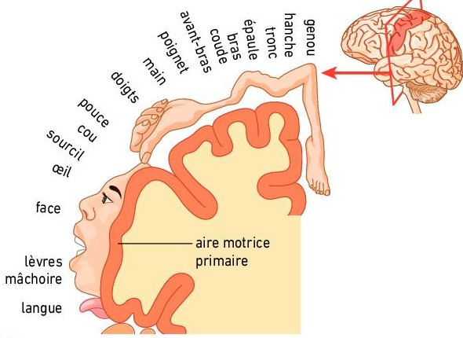
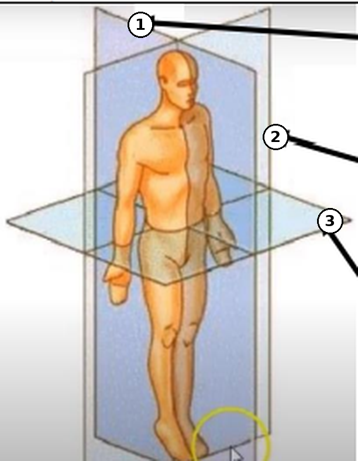

Deux activités pour découvrir de quelles cellules est fait le cerveau, puis pour localiser la région du cortex qui commande nos mouvements volontaires. Tu mènes l'enquête dans les documents, et tu écris tes réponses sur ta fiche papier au fur et à mesure.
Prends ta ficheTon professeur te la donne en classe.
Cherche dans les documentsLis les textes, observe les images (touche une image pour l'agrandir), regarde les vidéos. Les réponses ne sont pas écrites : à toi de les trouver.
Vérifie, puis écris sur ta ficheÉcris ta réponse et touche « Vérifier » : la page te dit si c'est juste, sinon un indice te dit où chercher. Recopie ensuite sur ta fiche et coche « C'est fait ».
Activité 1
Les cellules du cerveau
Le cerveau est un organe très complexe. Après plus d'un siècle de recherches, on commence à comprendre son organisation, notamment à l'échelle des cellules.
Problématique : quelles cellules constituent le cerveau et quels sont leurs rôles ?
1
Le cerveau dans la boîte crânienne
Le document A est celui de ta fiche. Lis le texte, observe la photo, puis trouve le nom des structures 1 à 3.
Texte
Du cerveau aux neurones
« Situé dans la boîte crânienne, l'encéphale est constitué du cerveau (principal organe du système nerveux central), du cervelet et du tronc cérébral. Le cerveau est composé de deux hémisphères dont la surface forme de nombreux replis ou circonvolutions. »
D'après le manuel de SVT Terminale, Bordas.
Document A · Situation du cerveau dans la boîte crânienne. Touche l'image pour l'agrandir.D'après le manuel de SVT Terminale, Bordas.
2
Une coupe coronale de cerveau humain
Le document B est la photographie d'une coupe de cerveau frais. Observe les couleurs, lis les textes, puis nomme les structures 1 à 5. La légende « Centres nerveux profonds » est déjà écrite.
Texte 1
Deux tissus dans le cerveau
Sur une coupe de cerveau frais, on distingue deux tissus. La substance grise, plus foncée, contient surtout les corps cellulaires des neurones. La substance blanche, plus claire, est formée de leurs prolongements, les axones. La couche de substance grise qui recouvre tout le cerveau s'appelle le cortex.
Texte 2
Deux hémisphères reliés
Les deux hémisphères sont séparés par un sillon profond. Au fond de ce sillon, une épaisse bande de fibres nerveuses, le corps calleux, relie les deux hémisphères. L'ensemble est entouré et protégé par les os du crâne, qui forment la boîte crânienne.
Document B · Coupe coronale de cerveau humain (photographie). Touche l'image pour l'agrandir.D'après le manuel de SVT Terminale, Bordas.
Observe aussi où se trouve la substance grise sur la photo : uniquement à la périphérie, ou aussi en profondeur ? Ta fiche te le demande.
3
Au microscope : le cortex et ses neurones
Le document C montre le cortex au microscope ; le document D, des neurones de ce cortex, plus grossis. Utilise le rappel pour nommer les parties 1 à 4 du neurone, puis réponds aux trois questions.
Rappel du chapitre 1
La structure d'un neurone
Un neurone possède un corps cellulaire, qui contient le noyau, et des prolongements de deux sortes : de nombreuses dendrites, courtes et très ramifiées, qui reçoivent les messages d'autres neurones ; et un axone unique, long et fin, qui conduit le message nerveux et se divise à son extrémité en ramifications.
« Le nombre total de neurones à l'intérieur du cerveau est estimé entre 86 et 100 milliards. »
D'après le manuel de SVT Terminale, Bordas.
Documents C et D. C : cortex cérébral au microscope optique. D : neurones du cortex cérébral. Touche l'image pour l'agrandir.D'après le manuel de SVT Terminale, Bordas.
Observe les documents C et D
4
Les cellules gliales
Les neurones ne sont qu'une partie des cellules du cerveau : les autres sont les cellules gliales. Regarde la vidéo en prenant des notes : pour chaque type de cellule gliale, sa forme et son rôle. Puis identifie les cellules 1 à 3 du schéma.
Astrocyte en culture (marquage fluorescent).D'après le manuel de SVT Terminale, Bordas.
Les cellules nerveuses : neurones et cellules gliales.Document de l'activité.
5
Bilan de l'activité 1
Relis tes réponses des étapes 1 à 4, puis réponds à la problématique en quelques lignes : quelles cellules constituent le cerveau et quels sont leurs rôles ? Dis aussi comment ces cellules coopèrent.
Activité 2
Le cortex moteur et la voie motrice
Contrairement aux mouvements réflexes, la commande des mouvements volontaires fait nécessairement intervenir le cerveau : c'est au niveau du cortex cérébral que se manifestent la conscience des perceptions et la volonté de commander des mouvements.
Problématique : comment l'exploration du cortex permet-elle de situer les territoires du cerveau à l'origine de la motricité volontaire ?
6
Le cortex : des lobes et des aires
Le schéma 1 est celui de ta fiche : le nom des lobes y est caché. Retrouve-le en comparant le schéma 1 avec le document 2.
Document 1 · Rappel
Le cortex
« Il s'agit de la matière grise périphérique, « l'écorce » du cerveau, constituée de plusieurs couches de neurones interconnectés. Dessous, la matière blanche est constituée des axones des neurones corticaux. Chez l'être humain, son épaisseur est de 1 à 5 mm et sa surface de 0,26 m². Il est plissé et divisé en lobes par des sillons plus profonds, et en zones fonctionnelles (sensorielles, motrices, d'association) : les aires. »
Document de l'activité.
Document 2
Les aires corticales et leurs fonctions.Document de l'activité.
Schéma 1 · hémisphère gauche, vue latérale : l'avant du cerveau est à gauche.Document de l'activité.
7
L'aire motrice primaire et l'homoncule moteur
Comment a-t-on découvert le rôle de l'aire motrice primaire ? Exploite les documents pour compléter les phrases de ta fiche, puis compare les territoires des parties du corps.
Document 1 · Une expérience historique
« Dès 1870, Eduard Hitzig (médecin) et Gustav Fritsch (anatomiste) montrent que la stimulation électrique de différentes zones du cortex cérébral d'un animal provoque des contractions musculaires de régions précisément localisées. »
D'après le manuel de SVT Terminale, Bordas.
Document 2 · Un cas médical (exemple)
Après un accident vasculaire cérébral
Un patient est victime d'un petit accident vasculaire cérébral (AVC) : une petite zone de l'aire motrice primaire de son hémisphère gauche est détruite. À son réveil, il ne peut plus bouger volontairement les doigts de sa main droite. Il sent toujours ses doigts, et le reste de son corps bouge normalement.

Document 3 · Une carte motrice à la surface du cerveau. Coupe passant par l'aire motrice primaire.D'après le manuel de SVT Terminale, Bordas.Document 4 · Homunculus sensoriel et moteur. Chaque partie du corps est sculptée à la taille de son territoire sur le cortex.Photo : Natural History Museum, Londres.
Compare les territoires sur l'aire motrice primaire (documents 3 et 4)
8
L'IRM, pour explorer le cerveau
Regarde la vidéo, puis réponds aux trois questions. Si ta réponse est fausse, un indice te dit quoi chercher dans la vidéo.
L'IRM : une révolution pour l'exploration du cerveau.D'après le manuel de SVT Terminale, Bordas.
9
Les trois plans de coupe
L'IRM explore le corps en trois dimensions : on peut le « découper » selon trois plans. Pour chaque plan numéroté, cherche dans la vidéo le nom de la coupe, puis trouve dans quel sens on explore le corps en faisant glisser le plan.

Les trois plans de coupe.Document de l'activité.
10
Reconnaître une coupe
Voici six images obtenues par IRM. Pour chacune, choisis le type de coupe, puis vérifie. Touche une image pour l'agrandir.
Indice : demande-toi ce que tu vois. Le visage de profil, avec le nez et le cervelet ? Les deux hémisphères côte à côte, comme si tu regardais la personne de face ? Ou le cerveau vu par-dessus ? Compare avec les plans de l'étape 9.
Images A à F : document de l'activité.
Document de l'activité.
11
Localiser l'aire qui commande un mouvement
Sur ces IRM fonctionnelles, les zones en couleur sont les régions du cortex dont l'activité augmente pendant le mouvement. Sur les captures d'EduAnat2, Ga indique la gauche du sujet et Dr sa droite ; Av l'avant et Ar l'arrière. Touche une image pour l'agrandir.
12
Placer l'aire motrice primaire
Où se trouve l'aire motrice primaire, et où est le territoire de la main ? Utilise le document, tes réponses de l'étape 6, la carte motrice de l'étape 7 et les IRM de l'étape 11. Touche le schéma pour placer ta croix sur le territoire de la main, puis vérifie.
Document
Le cortex moteur primaire
« Tous nos mouvements volontaires sont commandés par une région du cerveau désignée sous le nom de cortex moteur. Le cortex moteur primaire est situé dans la partie postérieure du lobe frontal. Des messages nerveux moteurs partent ensuite du cerveau en direction des motoneurones médullaires. »
Document de l'activité.
Schéma 1 · hémisphère gauche, vue latérale : l'avant du cerveau est à gauche.Document de l'activité.
Touche le schéma : une croix apparaît. Tu peux la déplacer en touchant ailleurs.
13
La voie de la motricité volontaire
Le schéma 2 est celui de ta fiche. Exploite les documents pour comprendre le trajet du message nerveux, du cortex moteur jusqu'au muscle.
Document 1
Du cortex à la moelle épinière
« Des messages nerveux moteurs partent du cortex moteur en direction des motoneurones de la moelle épinière. Le faisceau de neurones qui commande les muscles des membres croise la ligne médiane juste en dessous du bulbe rachidien. » Ce croisement s'appelle la décussation.
Document de l'activité.
Document 2
Une commande controlatérale
« On cherche à vérifier que la commande d'un mouvement volontaire met en jeu un territoire bien déterminé du cortex cérébral et que cette commande est controlatérale (c'est-à-dire issue de l'hémisphère opposé). »
D'après le manuel de SVT Terminale, Bordas.
Schéma 2 · La voie de la motricité volontaire.Document de l'activité.
Quel trajet commande une fibre musculaire de l'hémicorps droit ?
Trois élèves ont proposé un trajet. Un seul est juste : lequel ?
14
Bilan de l'activité 2
Réponds à la problématique : comment l'exploration du cortex permet-elle de situer les territoires à l'origine de la motricité volontaire ? Utilise les mots : stimulation, lésion, IRM fonctionnelle, aire motrice primaire, lobe frontal, sillon central, homoncule, controlatéral, décussation, motoneurone.
15
Devoir : les IRM fonctionnelles du sujet 13112 avec EduAnat2
Tu disposes des IRM anatomiques et fonctionnelles d'un sujet sain nommé 13112, enregistrées lors d'un test visant à explorer le fonctionnement du cerveau pendant des tâches sensorimotrices courtes. Le sujet reçoit l'instruction visuelle ou auditive « cliquez trois fois sur le bouton droit » ou « cliquez trois fois sur le bouton gauche ».
Protocole
Ouvre le logiciel en ligne : EduAnat2 Online. Il permet de superposer une IRM fonctionnelle sur l'IRM anatomique d'un individu.
Localise précisément sur les trois vues, à l'aide des images fonctionnelles, l'aire corticale mobilisée pour effectuer des mouvements volontaires de la main droite, puis celle mobilisée pour les mouvements volontaires de la main gauche, chez le sujet 13112.
Remplis le tableau de ta fiche en insérant des captures des différentes coupes.
Condition expérimentale
Mesure de la différence entre les acquisitions avec activation motrice de la main gauche versus celle de la main droite
Mesure de la différence entre les acquisitions avec activation motrice de la main droite versus celle de la main gauche
Images fonctionnelles obtenues, après réglage du plan de coupe, mettant en valeur les zones corticales les plus actives
Coupe axiale
Coupe axiale
Coupe coronale
Coupe coronale
Coupe sagittale
Coupe sagittale
Interprétation
Pour interpréter : mets en relation la région du cerveau activée et la main qui réalise le mouvement, puis compare les régions activées entre les individus pour une même tâche motrice (le sujet 13112 et le sujet 13111 de l'étape 11).